PRESENTER
DATE
처음으로 서밋에 참가하게 되어 무척 설레는 맘으로 향했습니다. 기존에 흔히 보아왔던 단순 기업 박람회의 스케일과는 차원이 달랐습니다.
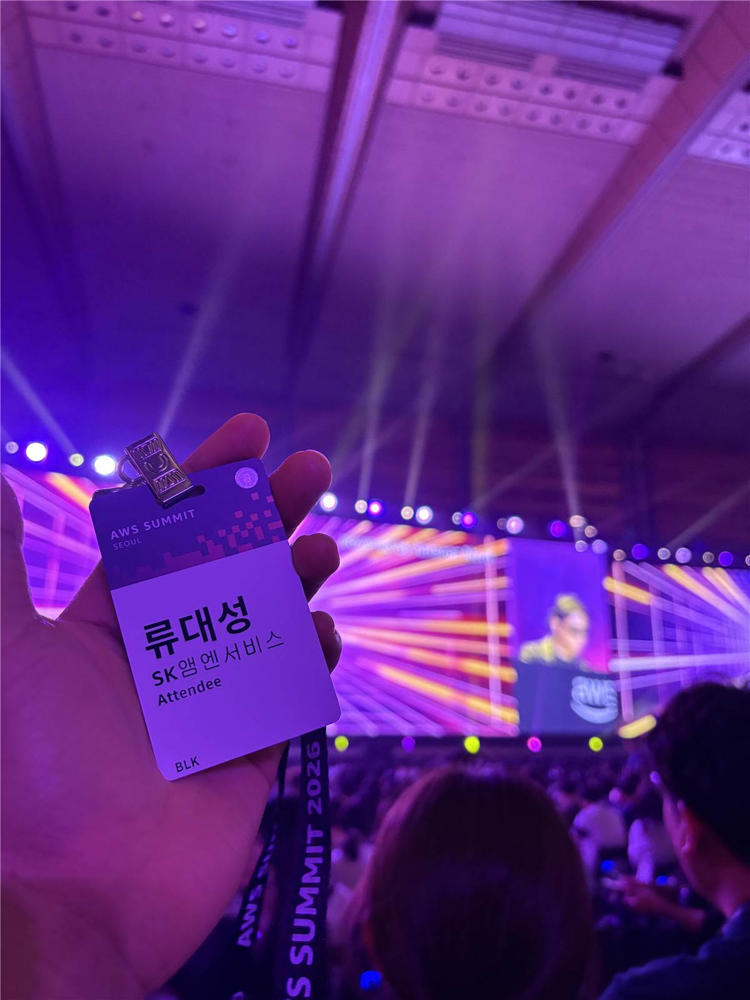
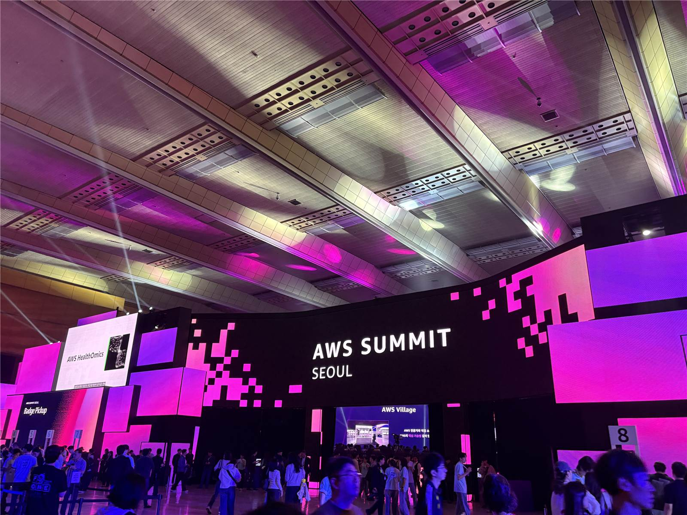
현장은 9개의 거대한 트랙으로 나뉘어 AI 모델, 데이터, 에이전트, 소프트웨어 엔지니어링, 인프라, 보안 등 모든 IT 분야가 정교하게 톱니바퀴처럼 굴러가고 있었습니다.
LLM에 영구적인 장기 기억을 심는 고도화된 스토리지 설계.
방대한 AWS 제품군 속에서 최적의 실무 서버 구성을 설계.
수많은 AI 보안 위협을 한곳으로 묶어 방어하는 통제 기술.
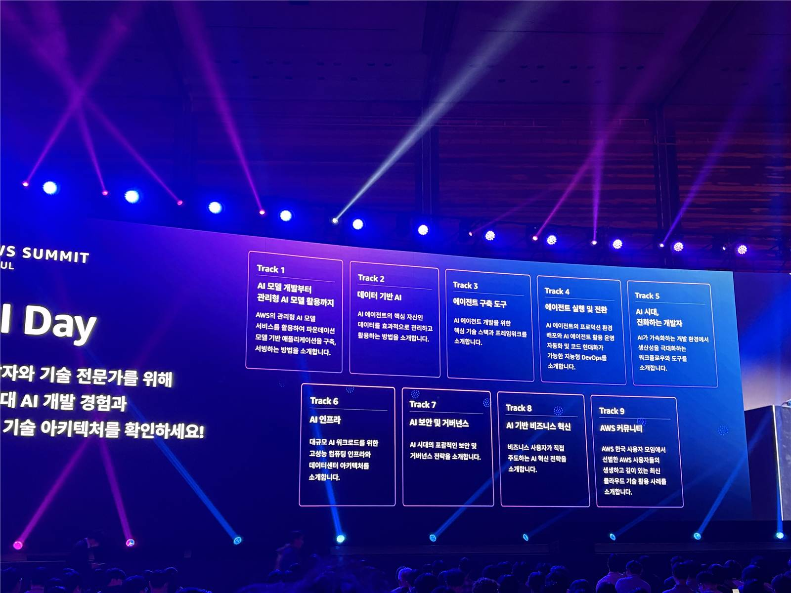
인간과 컴퓨터, 그리고 AI 사이의 소통 방식은 기술적 완성도와 신뢰성을 담보하기 위해 엄청난 패러다임 변화를 겪고 있습니다.
대화 턴(Turn) 수가 누적됨에 따라 자연어 소통의 기억 감퇴 및 맥락 왜곡 리스크와 Spec 기반 협업의 유지율을 실시간으로 확인해보세요.
AI의 단기 기억 소멸과 컨텍스트 리셋(Context Reset)을 극복하고, 초단기 작업이 아닌 중장기 대규모 엔지니어링 프로젝트를 성사시키는 유일한 비밀은 "명문화된 규격(Specification)"입니다.
# Presentation Design Specification layout: ratio: "1280 * 720 (Strict 16:9)" card_padding: "30px 44px" title_size: "2.6rem" media_constraints: gallery_height: "max 180px" coex_video: "loop autoplay muted" orientation_sync: kahoot_win: "portrait (.jpg)" lunch_box: "square 3-grid" variables: aws_orange: "#ff9900" neon_violet: "#8c52ff"
오라클 부스에서 진행된 미니세션으로, 컨텍스트 제한을 극복하고 AI가 과거의 복잡한 대화 맥락과 히스토리를 완벽하게 장기 보존하도록 구현하는 세 가지 데이터 설계 방식을 다루었습니다.
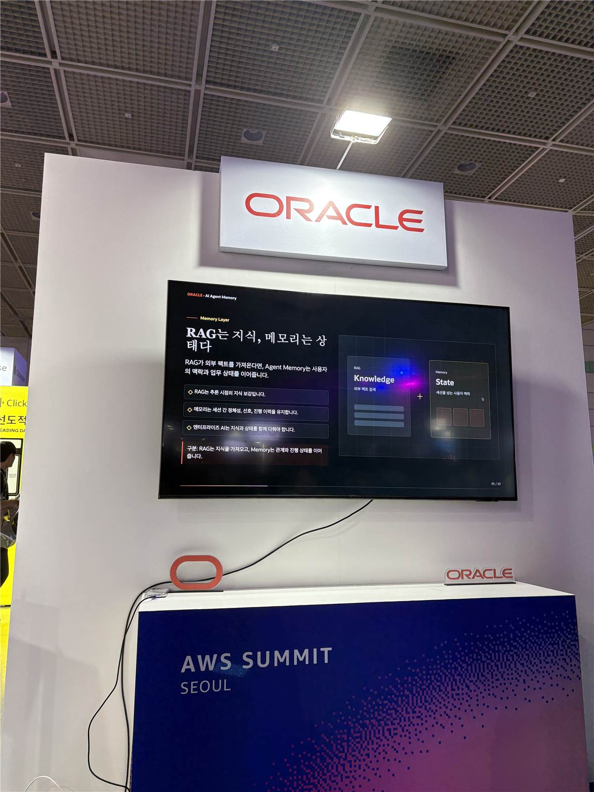
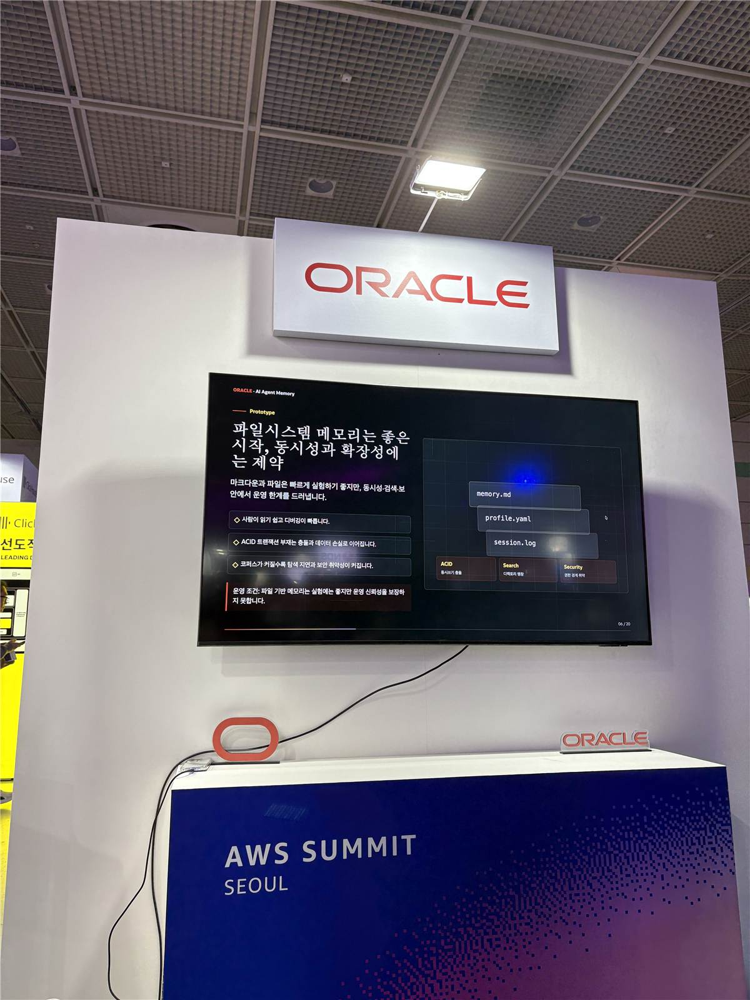
팔로알토 부스에서는 위협 모델이 급증한 AI 인프라 환경에서 보안 요소를 중앙 집약적으로 통제하는 AI Security Gateway 개념을 설명했습니다.
API 보안, 프롬프트 인젝션 방어, 토큰 탈취 방지, CORS 설정 등 수많은 보안 위협을 개별 대응하지 않고 단일 Gateway 인프라로 묶어 완벽하게 통제하고 처리합니다.
멀고 낯설게만 느껴졌던 최첨단 AI 서비스 역시, 결국 기존의 익숙한 데이터베이스(Database) 관리 방식과 네트워크 게이트웨이(Gateway) 연동 아키텍처를 응용해 구현된다는 사실이 매우 신선하고 친근하게 와닿았습니다.
팔로알토 부스의 AI Security Gateway 미니세션을 초집중하여 경청한 바로 그 직후, 현장 참여 엔지니어들을 대상으로 실시간 카훗 퀴즈 배틀이 펼쳐졌습니다.
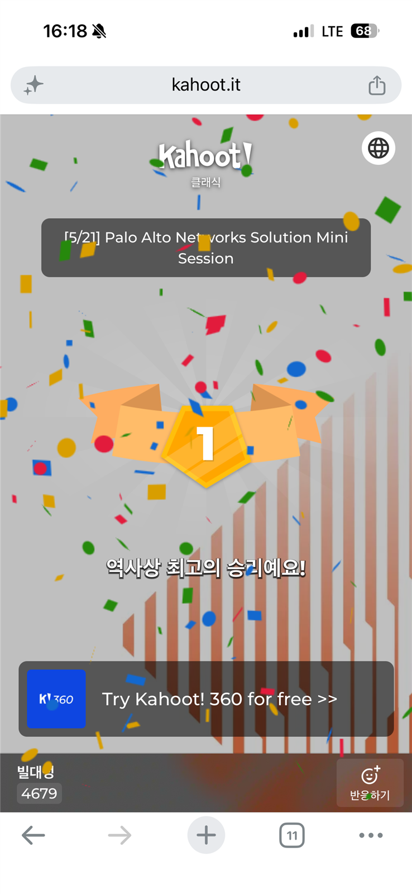
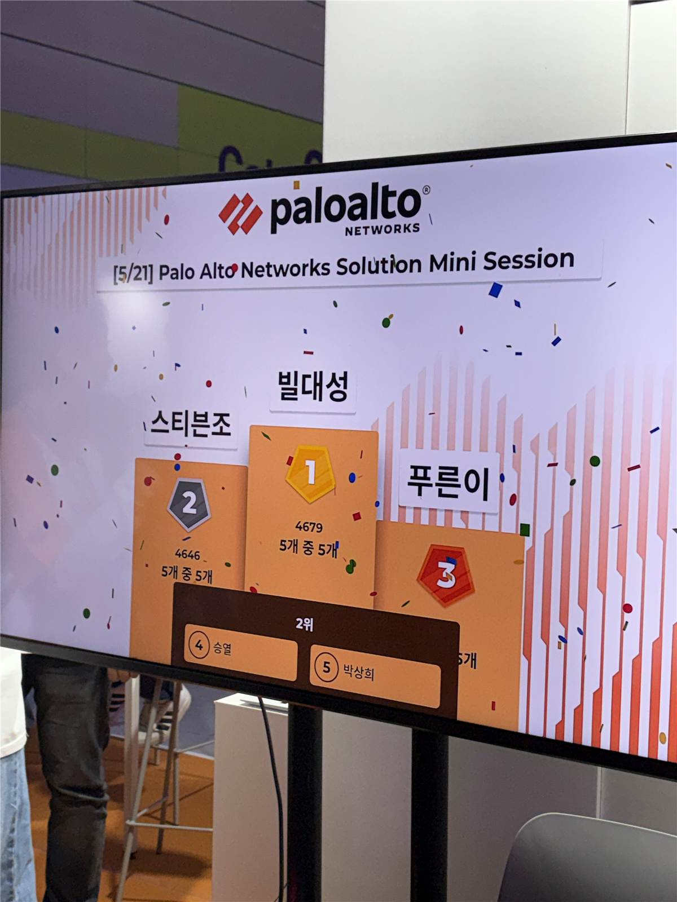
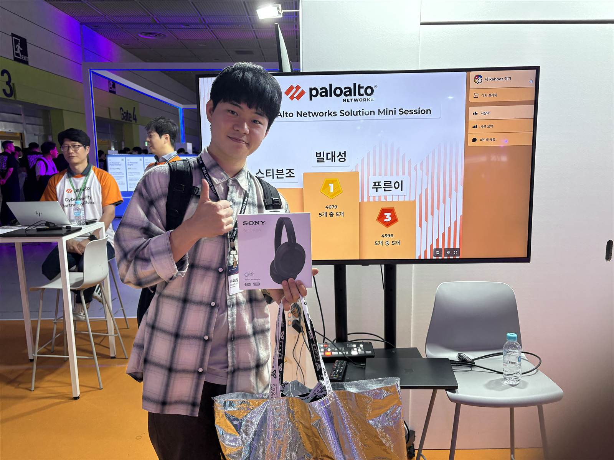
AWS는 제품의 수가 워낙 다양하고 방대하기 때문에, 주니어나 시니어 엔지니어를 불문하고 적절한 최적의 서버 및 인프라 구성을 설계할 때 가끔 혼란을 겪기 마련입니다.
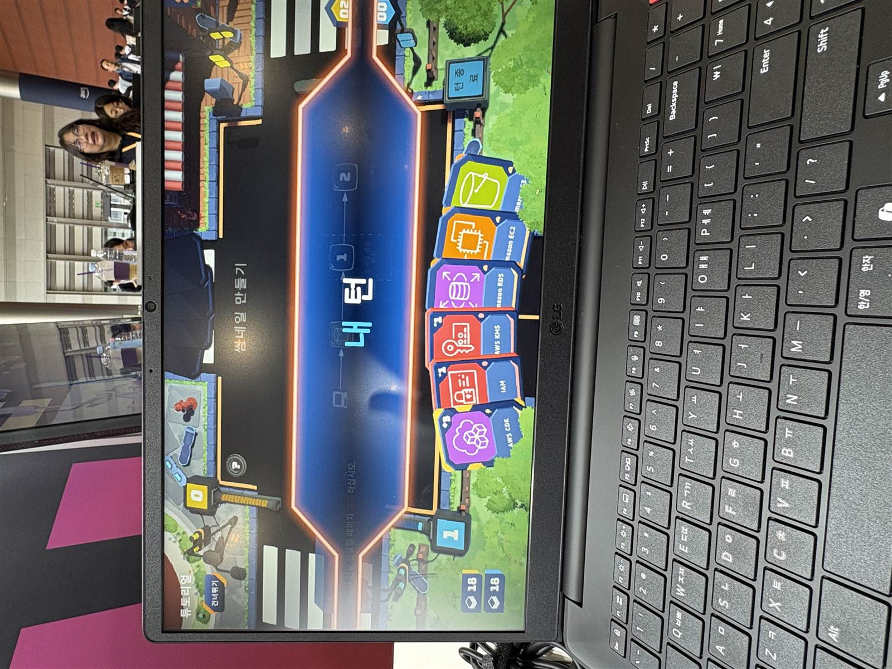
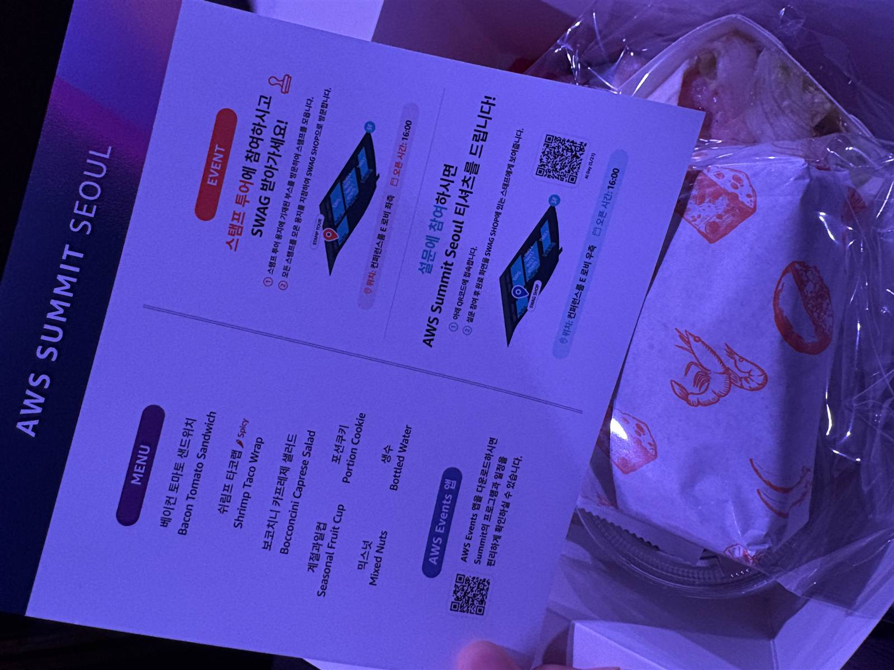
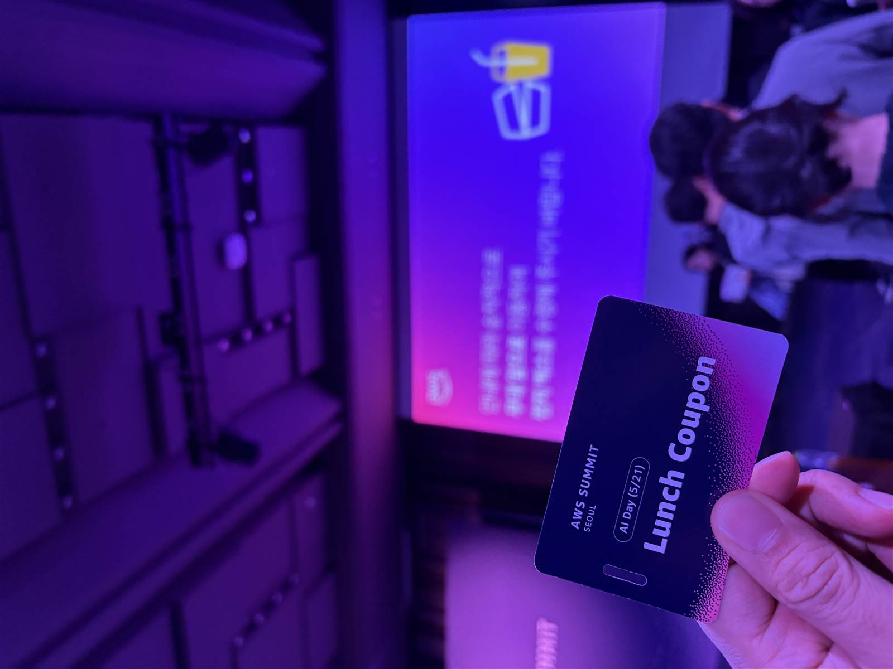
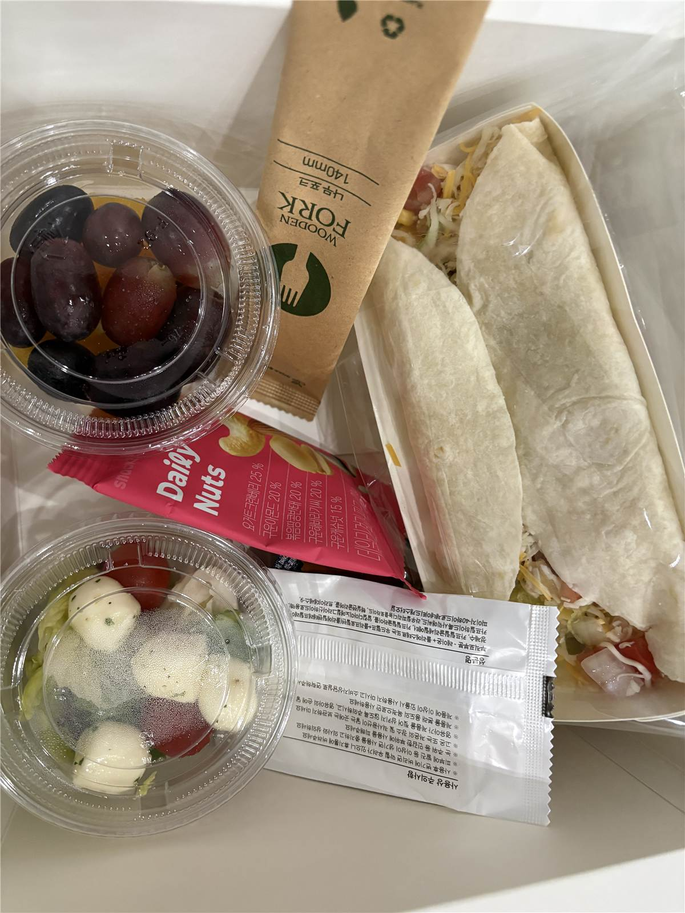
개발자들의 큰 축제인 만큼, 점심 식사 준비에 대한 기대도 컸습니다.
당연하게도, 단 한 번의 서밋 참여가 저를 하루아침에 비약적인 '레벨 업' 개발자로 만들어주지는 못합니다. 하지만 이번 서밋은 그 무엇보다 값진 가치들을 가슴속에 아로새겨 주었습니다.
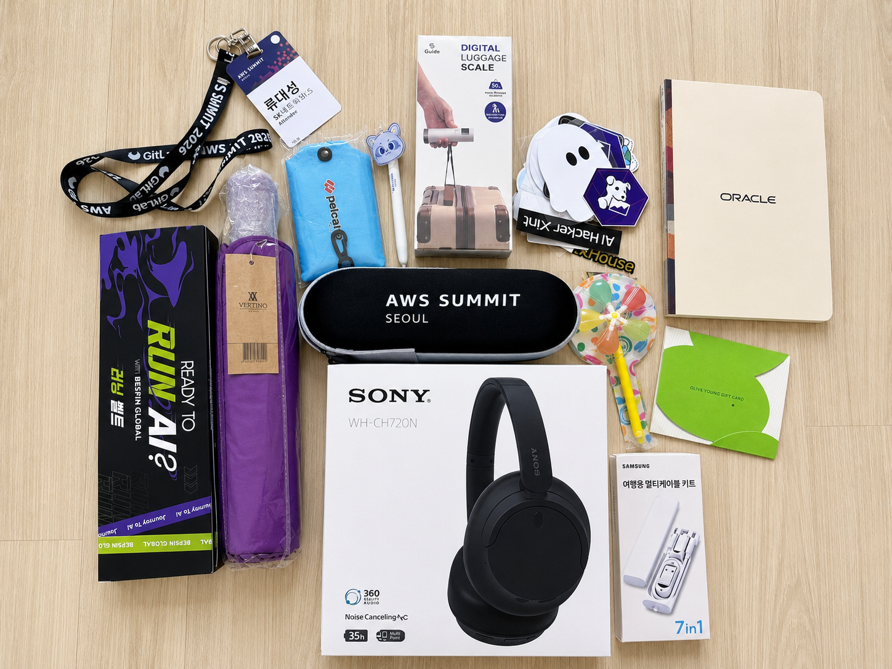
서밋에서 얻은 배움과 뜨거운 불꽃을 나누며,
우리 팀원분들과 함께 즐겁게 레벨 업 해보겠습니다!